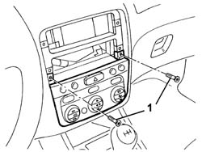
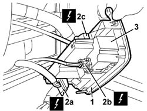
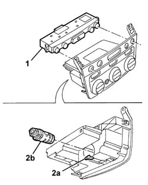

5040D15 control unit with automatic duel zone air conditioner knobs and buttons r r
- Path
- Procedures > 50 AUXILIARY UNITS > 5040 AIR CONDITIONING CASING AND COMPONENTS > 5040D air conditioner controls > 5040D15 control unit with automatic duel zone air conditioner knobs and buttons r r
- Kind
- repair procedure (removal / refitting; the operation number is the code)
- Applies to
- all engines; all production periods
- Interactive page
- https://sloeber94.github.io/elrnDB-a147/en/#/3025442
Applies to: all engines; all production periods
 Removing
Removing
 Refitting
Refitting7040A80 compartment unit on facia r r
1. Unscrew the bolts

Applies to: all engines; all production periods
1. Move the control unit and switches slightly.
2. Disconnect the electrical connections (2a, 2b, 2c).
 | Name | Connector |
|---|---|---|
2a | Climate control system control unit |
| Name | Connector |
|---|---|---|
2b | Passenger compartment air temperature sensor |
| Name | Connector |
|---|---|---|
2c | Hazard warning lights, fog lights, rear fog lamps control |
3. Recover the control unit and switches.

Applies to: all engines; all production periods
1. At the bench, release the switch unit.
2. If necessary, lift up the retainer (2a) and extract the internal temperature sensor and fan (2b).
3. Recover the air conditioning control unit.

Applies to: all engines; all production periods
Refitting
RemovingCheck that the control unit is undamaged.
If removed, fit the internal temperature sensor and fan in position and attach it to the retainer.
Fit the switch unit in its seating.
Connect the electrical connection.
Fit the control unit and switches in position.
Tighten the retaining bolts.
7040A12 removable box on facia - arrange
Carry out the procedure for coding the climate control unit (see: Descriptions and Operation - 5040)
Topics linked from this page (6)
- 5570T80 car radio unit - r+r
- 7040A12 removable box on facia - arrange
- 7040A80 compartment unit on facia r r
- H12A Hazard warning lights, fog lights, rear fog lamps control ( Connectors )
- K89 Passenger compartment air temperature sensor
- M70 Climate control system control unit